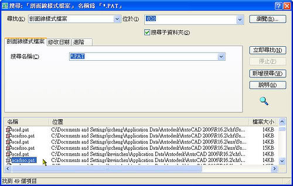
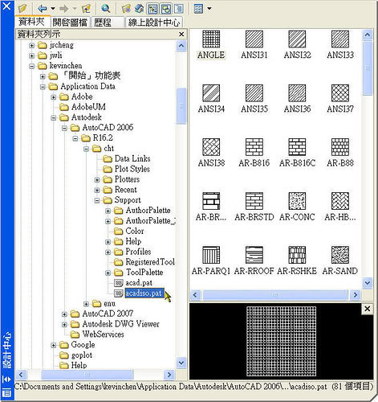
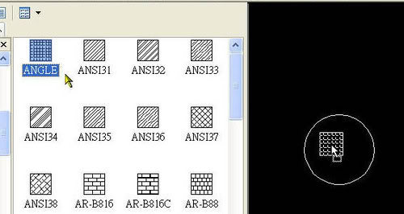
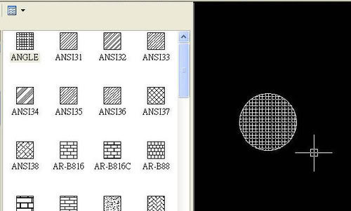
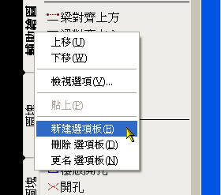
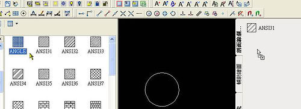
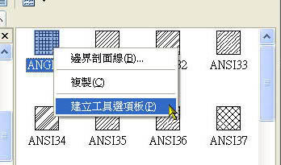
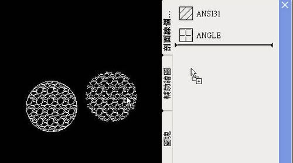
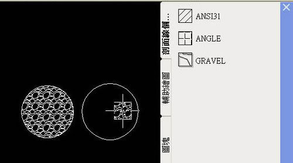

AutoCAD 本身所提供的 剖面線 HATCH指令，以 AutoCAD 2006 為例，一般在建立 剖面線 時有3種方法:
1.按一下「繪圖」功能表 →「剖面線」。
2.按一下「工具」功能表 →「設計中心」。
3.按一下「工具」功能表 →「工具選項板」。
※※※ 基本運用 ※※※
1.「繪圖」功能表 →「剖面線」或在指令行: 輸入 hatch → 會顯示「剖面線與漸層」對話方塊。
指定[類型與樣式]、[角度和比例]後，使用 加入: 點選點 或 加入: 選取物件 等方式，
在目前圖面 指定點或選取 周圍形成封閉區域的既有物件決定邊界，進而建立套用的剖面線樣式外觀。
PS:也可以在 指令行: 輸入 -hatch → HATCH 會顯示指令行提示。
2.「工具」功能表 →「設計中心」或在指令行: 輸入 adcenter → 會顯示「設計中心」。
找尋 AutoCAD 剖面線樣式檔 位置:
C:\Documents and Settings\使用者帳號\Application Data\Autodesk\AutoCAD 版本\版本代號\cht\Support
也可以使用搜尋方式:

a.在「資料夾」標籤上，按一下「搜尋」按鈕
b.於「尋找」中，選取「剖面線樣式檔案」
c.在「位於」方塊中，選取安裝此程式的磁碟機(如本機磁碟 C )
d.選取「搜尋子資料夾」選項
e.在「剖面線樣式檔案」標籤上，於「搜尋名稱」方塊中輸入 * (星號)
f.按一下「立即尋找」
使用說明:
找到 剖面線樣式檔(acad.pat、acadiso.pat)後，連續點擊 2 下 acadiso.pat(公制) 會顯示所有剖面線樣式。

指定[類型與樣式]後，按住滑鼠左鍵拖曳到欲建立剖面線的區域，即可建立該類型的剖面線。


可以再透過 HATCHEDIT 剖面線編輯指令，編輯建立後的剖面線比例及角度等性質。
3.「工具」功能表 →「工具選項板」
a.請自行新建新工具選項板，再更名為 剖面線個人化

b.可以由「設計中心」，指定[類型與樣式]後，按住滑鼠左鍵拖曳到「工具選項板」，並建立該類型之剖面線。

也可以按滑鼠右鍵，建立工具選項板

c.也可由圖面選擇既有剖面線，按住滑鼠左鍵拖曳到「工具選項板」，並建立該類型之剖面線。

使用說明:
從「工具選項板」指定[類型與樣式]後，點選欲建立剖面線的區域，即可建立該類型的剖面線。

延伸閱讀：
「教學」剖面線之自訂概述
https://www.autocad-tw.com/t35-topic
「教學」剖面線之進階操作